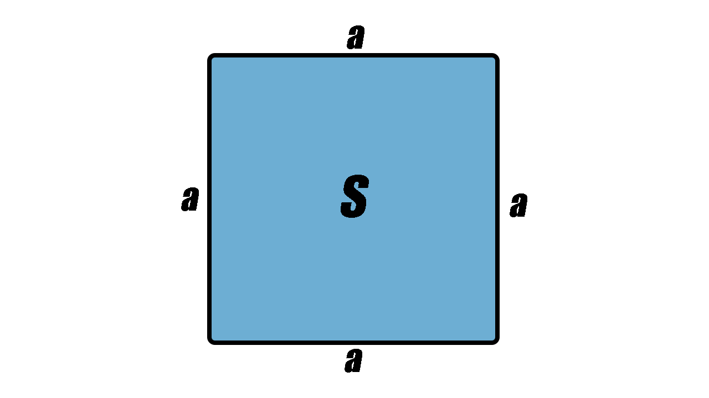
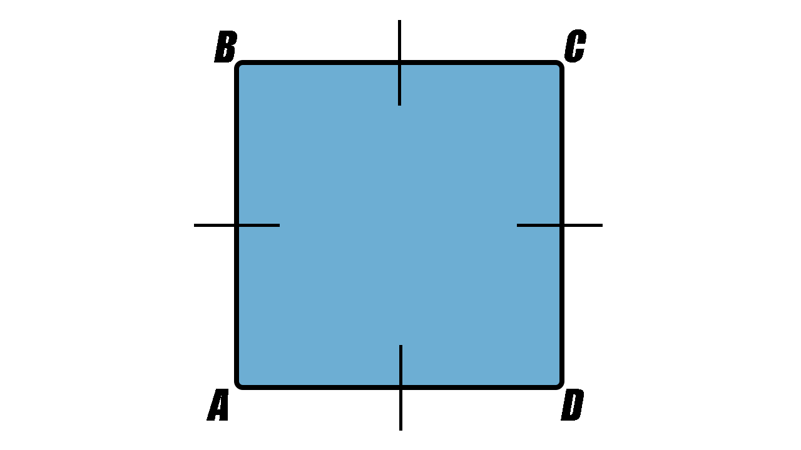

Kvadrāts ir četrstūris, kuram visas malas ir vienāda garuma un visi leņķi ir vienādi.
Kvadrāta visas malas ir vienāda garuma: AB=BC=CD=AD
Kvadrātam visi leņķi ir vienādi ar 90°.
Laukums ir lielums, kas raksturo virsmas izmēru
Kvadrātam gan platums, gan garums ir vienādi, tāpēc laukumu var pierakstīt:
S=a⋅a jeb S=a2, kur a ir kvadrāta mala.
Ja kvadrāta malas garums ir 10cm, tad tā laukums
S=102=10⋅10=100cm2
Perimetrs ir slēgtas plaknes figūras apkārtmērs.
Kvadrāts ABCD
Ja kvadrāta ABCD mala ir 7 cm gara, tad tā perimetrs ir 28 cm.
P =7+7+7+7=28 (cm)
P =7⋅4=28 (cm)